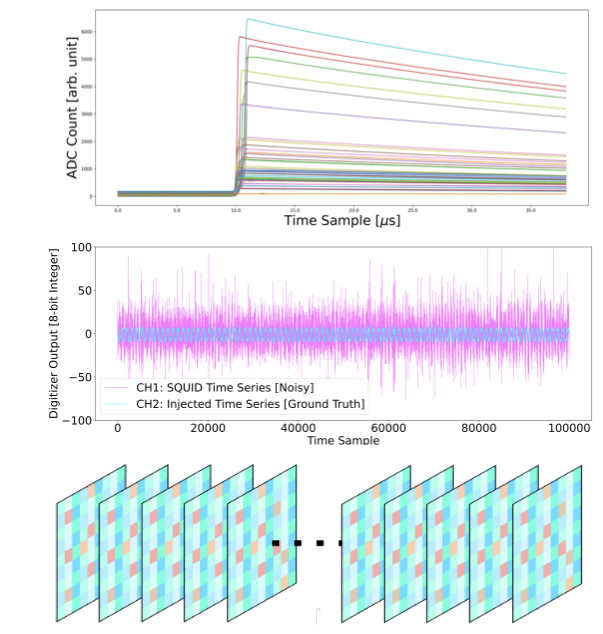
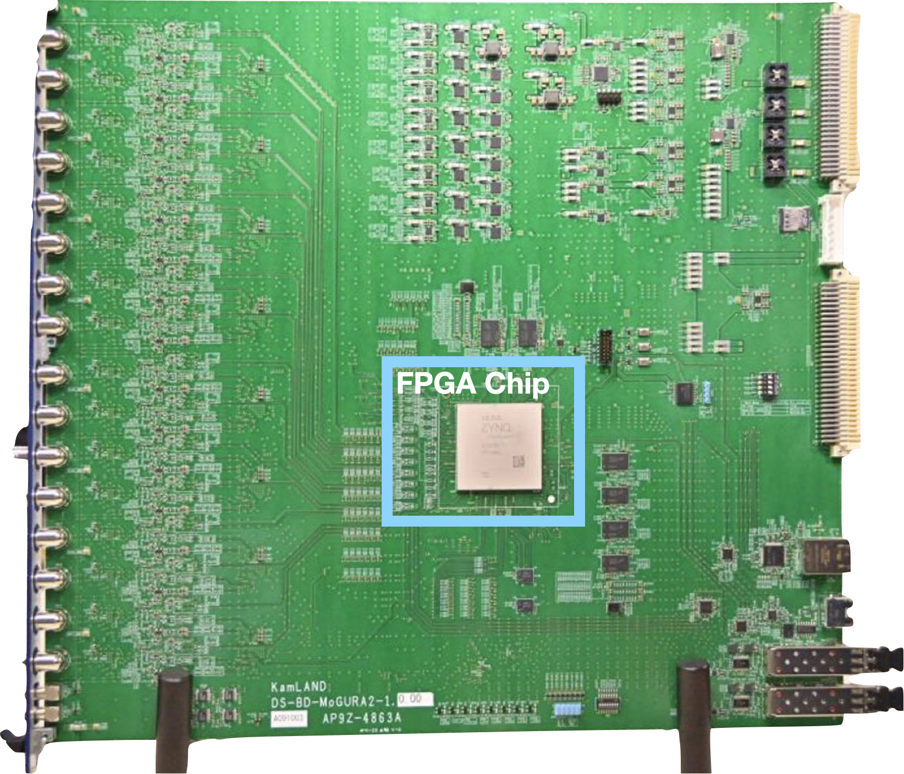
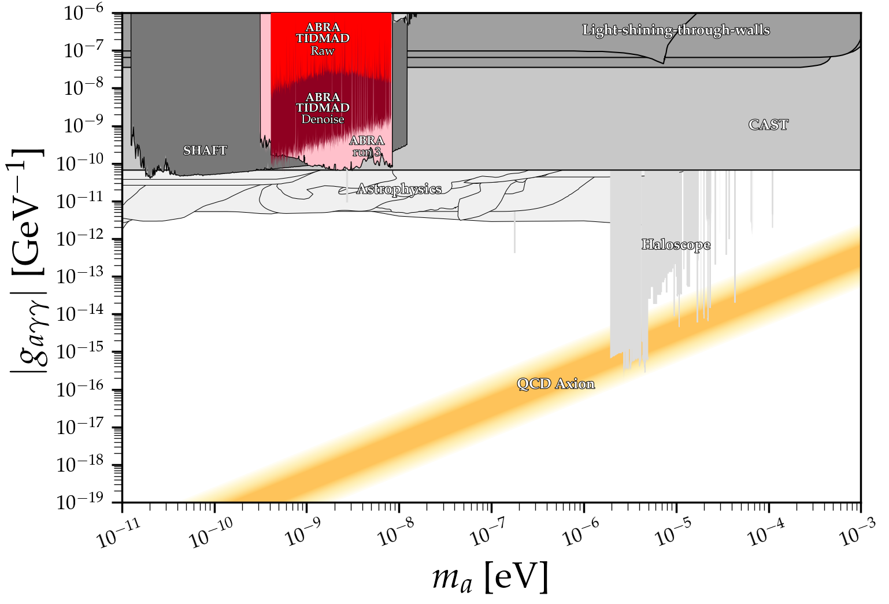
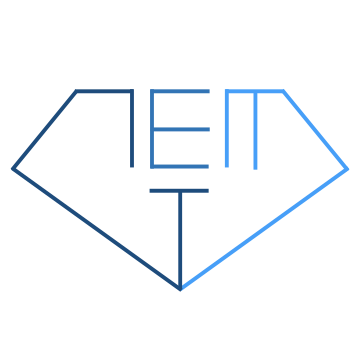
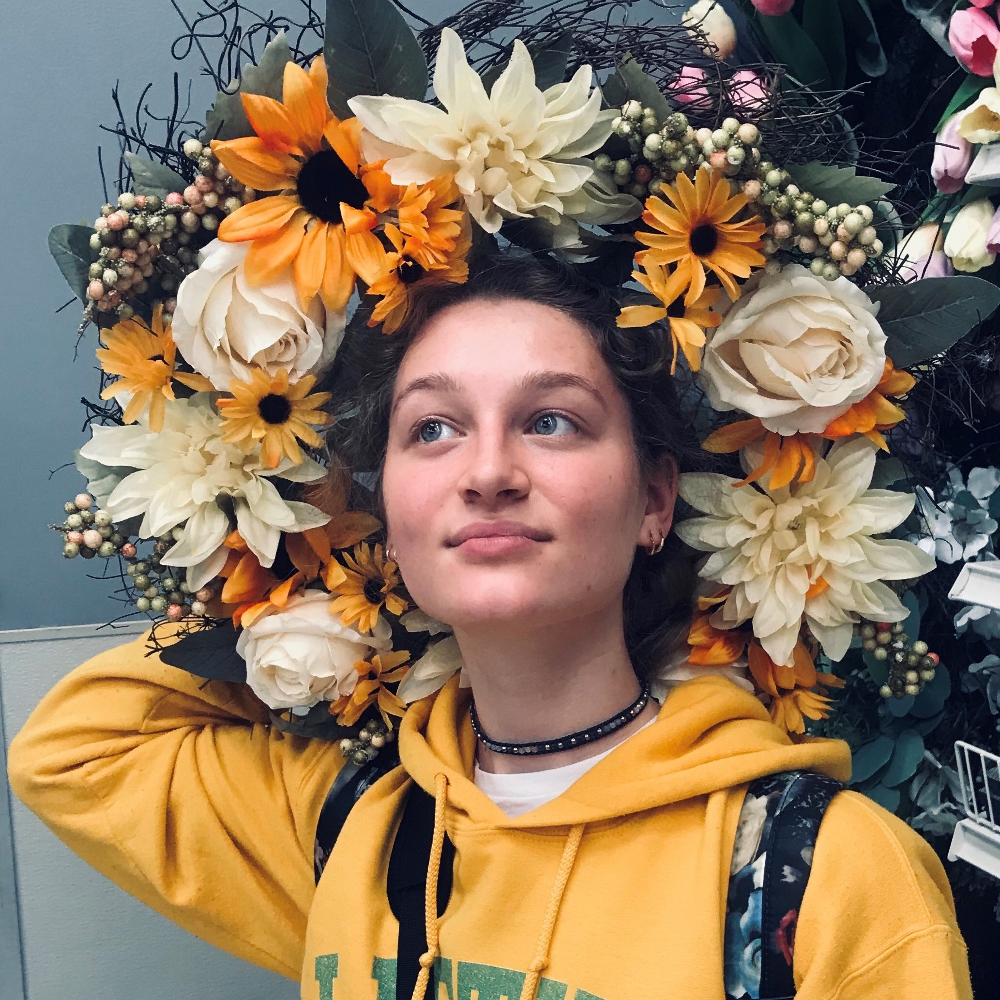
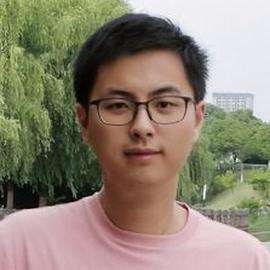

Rare AI Lab
I have an open PhD position in my group for 2025-2026 Application cycle. Prospective students are welcome to apply through either HDSI or Physics. Please email me for more details!
Research
Click here for selected publications
Nature
Particle Physics Experiments
AI/ML Research
Rare AI
Traditional data-intensive AI algorithms struggle to adapt to rare physics event searches due to limited training data availability. The overarching goal of the Rare AI Lab is to develop specialized AI algorithms that operate effectively in sparse-data domains, thereby maximizing the discovery potential of rare event search experiments. My research interests include:
- Bayesian rare event surrogate models that accelerate computationally expensive simulations in neutrino and gravitational wave physics
- AI-ready datasets derived from real neutrino and dark matter detectors
- Scientific AI agents capable of autonomous discovery
- Particle identification using geometric deep learning methods

Geometric Deep Learning
Different Rare Event Search Detectors generate distinct datatype: LEGEND's germanium detectors produce sharp, brief pulses (TOP); ABRACADABRA's SQUID (superconducting quantum interference device) generate ultra-long time series with rich frequency content (MIDDLE); KamLAND-Zen and XENONnT create high-dimensional spatiotemporal data projected onto a plane or a sphere (BOTTOM); and LIGO detects unique chirp-like gravitational wave signals. Our group develops neural networks that leverage the inherent structure and symmetries of each data type. We create targeted benchmarking datasets that connect algorithm performance directly to each experiment's specific challenges, ensuring our innovations translate into meaningful scientific discoveries.

Hardware-AI Codesign
Our research focuses on deploying ML models for real-time data acquisition in particle physics experiments. We're collaborating with experts on FPGA and heterogeneous system to integrate advanced neural networks onto RFSoC (Radio Frequency System-on-Chip) platforms, enabling KamLAND-Zen to reconstruct particle positions and control detector functions in real-time.

Physics Data Release for AI/ML
Releasing real neutrino and dark matter detector data to the public, allowing core AI algorithms to extract the signal and produce real physics results thereby advancing fundamental science!

GeM Group
The Germanium Machine Learning (GeM) Group within the LEGEND collaboration, leverages efficient and interpretable AI to aid all aspects of LEGEND analysis while educating domestic and international collaborators to gain AI experiences.
Physics
Group Members
Principle Investigator
Graduate Students

Sonata Simonaitis-Boyd

Min Zhong
Undergraduate Students
Avi Mehta:
data scienceBrian Liu:
data scienceFong Vo:
data scienceMatthew Segovia:
physicsOwen Shi:
data scienceOwen Yang:
data scienceSophie Wang:
data scienceLiuxuhong (Francisco) Zhao:
data scienceLuca Georgescu:
physicsAlumini & Visiting Scholar
Ann-Kathrin Shuetz:
Postdoctoral Scholar at Lawrence Berkeley National Lab, visited Rare AI Lab in March 2024Kelly Weerman:
PhD student at University of Amsterdam, visited Rare AI Lab in Feb. 2025Eugene Ku:
UCSD undergraduate students worked in Rare AI Lab, currently PhD at Texas A&MAlex Migala
: UCSD Physics PhD student, conducted first year Rare AI labAwards
-
Dissertation Award in Nuclear Physics
American Physical Society"For the invention of a novel machine learning algorithm that broke down significant technological barriers with monolithic liquid scintillator detectors and, in turn, delivered the world’s most sensitive search for neutrinoless double beta decay." link
Oct. 2022 -
Postdoctoral Award of Research Excellence
UNC Chapel Hill"Aobo Li is a postdoctoral research associate and COSMS Fellow in the College’s Department of Physics and Astronomy. He is described by his professors as a “rising star in the neutrino and nuclear physics community.” He leverages artificial intelligence to facilitate the experimental search of neutrino-less double-beta decay – part of an effort to explain why there was matter left after the Big Bang instead of only pure energy. His efforts to stay informed about new tools in machine learning (and immediately learn how to best apply them to experiments) has already led to several notable achievements. Li’s expertise and leadership provide a unique educational opportunity for UNC graduate and undergraduate students."link
July 2022 -
Machine Learning: Science and Technology Paper Award
NeurIPS 2022 Machine Learning and Physical Sciences Workshop"The contribution Ad-hoc Pulse Shape Simulation using Cyclic Positional U-Net by Aobo Li, Julieta Gruszko, Brady Bos, Thomas Caldwell, Esteban León, and John Wilkerson was selected for the MLST Paper Award. The award is sponsored by Machine Learning: Science and Technology and acknowledges an outstanding submission to the workshop."link paper link
Nov. 2022
Teaching
-
PHYS 139/239: Machine Learning in Physics
UCSD Department of PhysicsSpring 2024
-
DSC40A: Theoretical Foundation of Data Science
UCSD Halicioglu Data Science InstituteWinter 2024
-
The Practical Machine Learning
PIRE-GEMADARC Summer SchoolThis course aims at teaching machine learning to experimental physicists, it discussed current AI frontiers in Computer Vision and Natural Language Processing and how they can be applied to comtemporary particle physics experiments. Course website
Fall 2021
Appointment
Assistant Professor, Chancellor's Joint Initiative
Education
Boston University
Advisor: Chritopher Grant
Thesis: The Tao and Zen of neutrinos: neutrinoless double beta decay in KamLAND-Zen 800